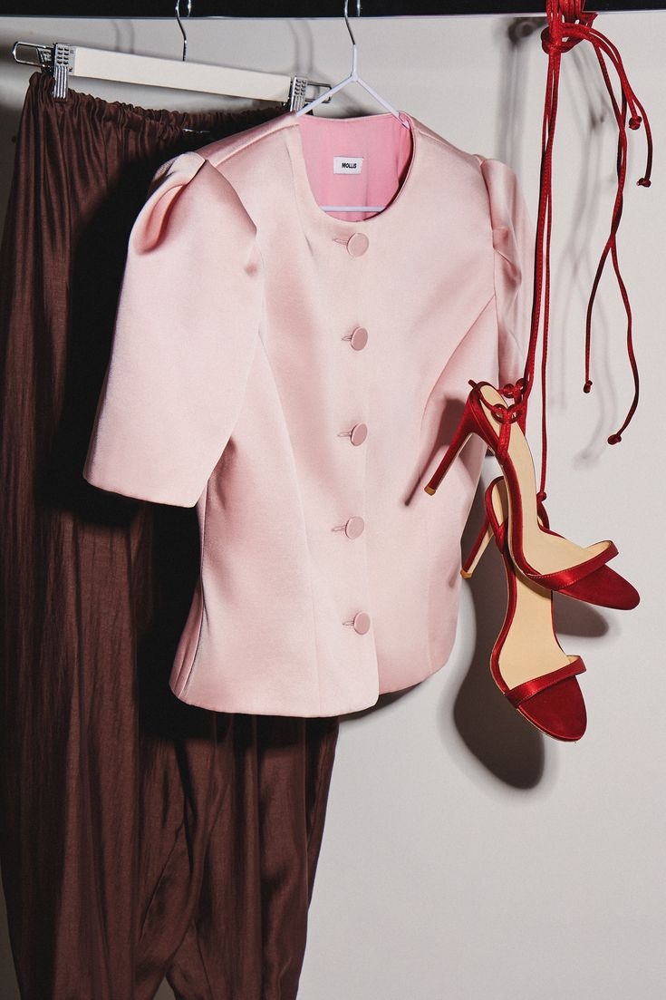
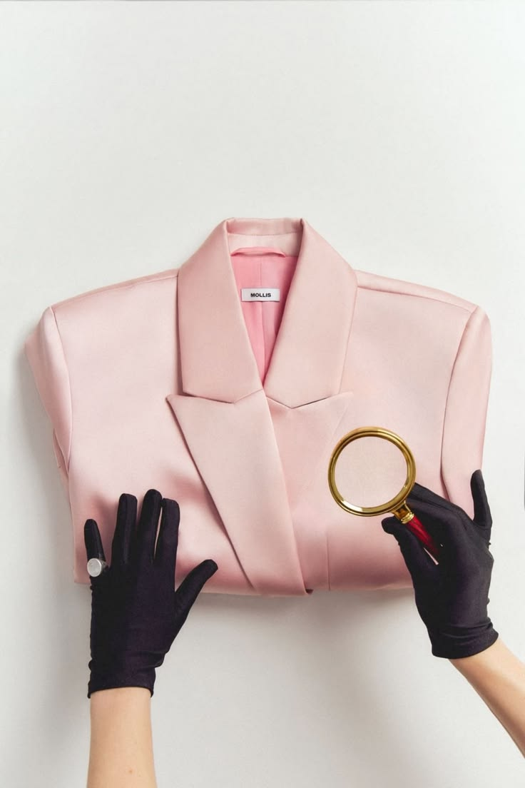
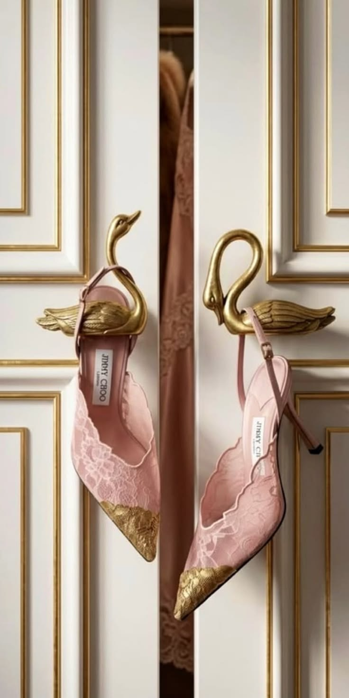
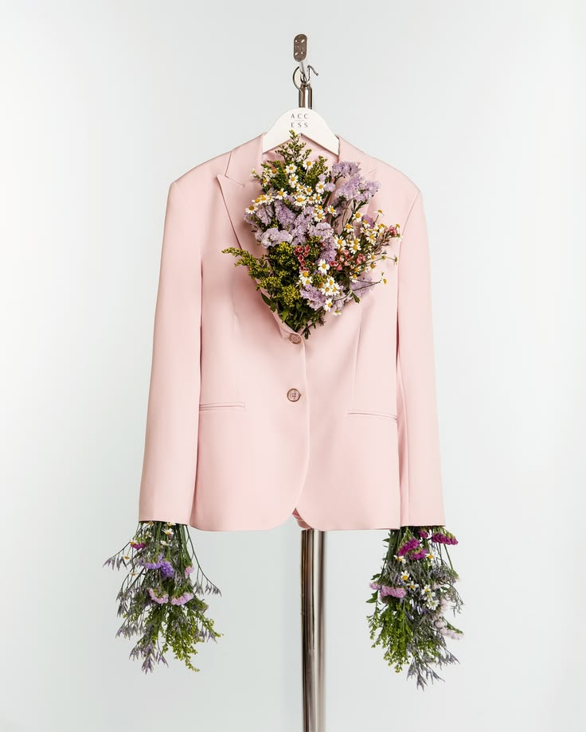

True style is not about blindly following every seasonal trend,but about discovering what truly works for your unique personality and lifestyle.
Building a timeless and functional wardrobe starts with understanding color theory and knowing which shade illuminate your complexion.
When you feel confident in what you wear,it tranforms your entire posture and energy.
Take your time to experiment with diffrent combinations, invest in versatile key pieces, and remember that fashion is canvas for your self-expression.
Let this guide inspire you to curate a closet you love, making every morning dressing routine a joyful and effortless experince.